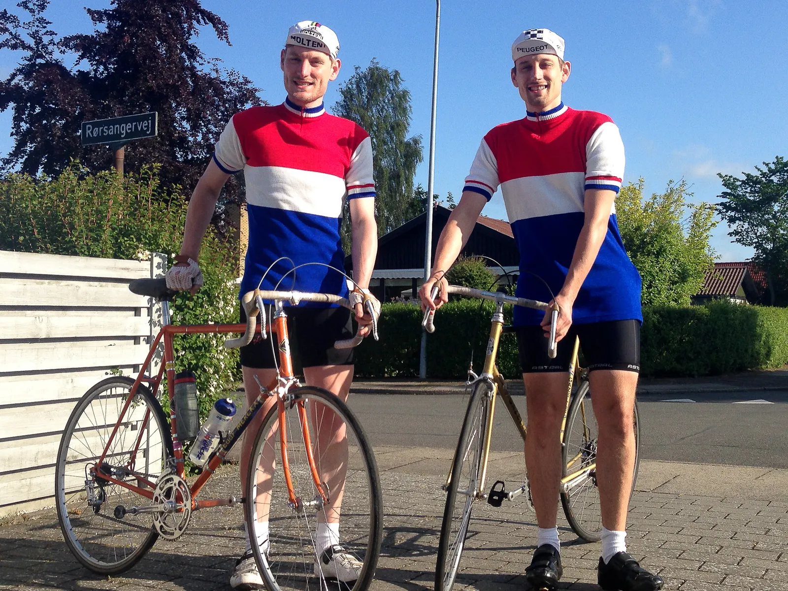
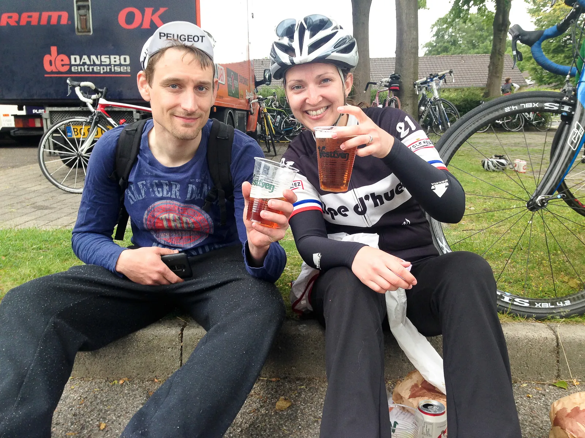
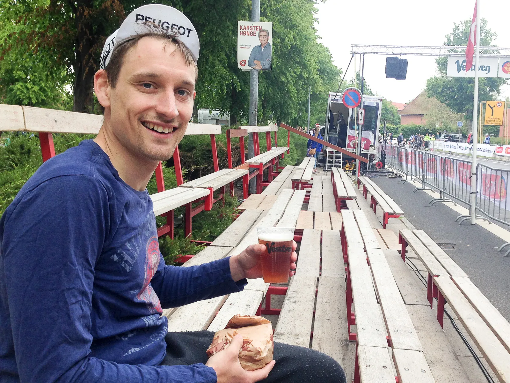

Fyen Rundt 2015: Grådighed kostede finalepladsen

Mens Squadra Molteni officielt kørte Munkebjerg Classic, var Kasper i dagens anledning udlånt til det hollandske hold Team Staalen Racefietsen. Han skulle hjælpe sin bror til sejr ved Fyen Rundt 2015.
Af Kasper Sørensen
Desværre kostede min grådighed dyrt: På toppen af Vissenbjerg, 20 km. fra mål, blev alle chancer for en topplacering til Team Stalen Racefietsen pulveriseret.
Vores totale uerfarenhed, resulterede en taktisk brøler, og vi trillede i mål over ti minutter efter vinderen! Det var dagen hvor Team Stalen Racefietsen havde deres debut på stålcyklerne.

Udlånt som hjælperytter ved Fyen Rundt 2015
Jeg var venligst udlånt af Squadra Molteni, til at køre som hjælperytter for min bror, Steh Van Sorens.
Han kender området, løbet og ruten, og jeg ville gerne hjælpe ham til at køre en fin tid.
Team Stalen Racefietsen blev født i vinters, da vi fik fat i nogle gamle hollandske stålcykler. En ældre hollandsk herre var begyndt at sælge ud af sin samling.
Han døde desværre kort efter, og handlen måtte afsluttes med hans søn.
Det viste sig, at der var tale om Fritz Hoogerheide, som har kørt for det hollandske Gazelle-Willem hold, og deltaget i Tour de France i 1970, hvor han blev en hæderlig Lanterne Rouge.
Min bror kørte på sin smukke Gazelle Champion Mondial AA-Frame med Nuovo Rrecord gruppe, mens jeg kørte på min Molteni team cykel.
Min hollandske Cornelo, er desværre ikke helt klar til fart.
Starten gik over stok og sten.
Første time blev kørt med over 40 i snit
Min bror pakkede sig i feltet, mens jeg legede udkigsmand helt fremme. Min første hjælperytter-opgave kom ca. halvvejs. Min bror fik en krampe, og blev sat på bakkerne ved Broby.
Jeg lod mig falde hurtigt tilbage, kom med lidt opmuntring og gav ham læ. Små fem kilometers jagt senere fik vi kontakt. Trods kramper og bidende ben, kørte han helt fantastisk.
Holdt hovedet koldt, kæden stram, og flere gange blev de små huller roligt men sikkert kørt ind.
Herefter var det som om udsigten til Vissenbjerg lagde en lille dæmper på det hele, og benene fik restitueret lidt.
Efter toppen på Vissenbjerg er der 20 km. hjem af stor bred vej med vinden i ryggen. Jeg kom over Vissenbjerg med 75 meter til de forreste fire.
Brøleren: Jeg skulle bare være kørt!
Men jeg følte mine ben var gode, og ventede på min bror, for at få ham med. Grådigheden kostede dog dyrt, for han kom ikke – aldrig.
Først ti kilometer senere, da jeg lå og trillede, kom han. Hans ben var blevet til granit to gange op af Vissenbjerg.
Kramperne var så forfærdelige, at han måtte af cyklen 50 meter fra toppen, og trække den op. Jeg fik selvfølgelig en velfortjent, men kærlig, røffel om at jeg da ikke skulle have ventet, men bare kørt.
Meget uerfarent at tvivle på taktikken, når der køres finale. Forhåbentlig har jeg lært noget, og næste gang Team Stalen Racefietsen stiller til start, er vi bedre rustet til at klare det uventede.
Vi trillede hjem i tiden 2 timer 59 minutter og 40 sekunder.
I vores aldersklasse rækker det til en placering som nummer 6/7 ud af 33, og til en samlet plads som nummer 68/69 ud af de 644 som gennemførte.
Efter løbet fik vi mange sympatiske kommentarer med på vejen.




Det er efterhånden en dejlig vane, at opleve folks begejstring og beundring over, at der stadig køres ræs på de gamle stålcykler.